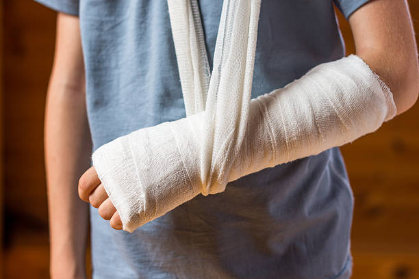

Trabalho da Clínica OrtoVida
A Clínica OrtoVida é especializada em ortopedia e reabilitação, oferecendo uma ampla gama de serviços para atender às necessidades de nossos pacientes. Nossa equipe multidisciplinar é composta por ortopedistas, fisioterapeutas e especialistas em medicina esportiva, todos comprometidos em proporcionar um atendimento de excelência.
Nossos principais serviçoes incluem:
- Consultas Ortopédicas: Avaliações detalhadas para diagnósticos precisos.
- Tratamentos Conservadores: Abordagens não cirúrgicas, como fisioterapia e terapias manuais.
- Cirurgias Ortopédicas: Procedimentos cirúrgicos realizados com tecnologia de ponta.
- Reabilitação: Programas personalizados de reabilitação para recuperação funcional.
Na Clínica OrtoVida, acreditamos na importância de um cuidado integrado, onde cada paciente recebe um plano de tratamento individualizado, visando não apenas a recuperação, mas também a prevenção de futuras lesões. Nosso compromisso é garantir que cada paciente retorne à sua atividade diária com segurança e qualidade de vida.
